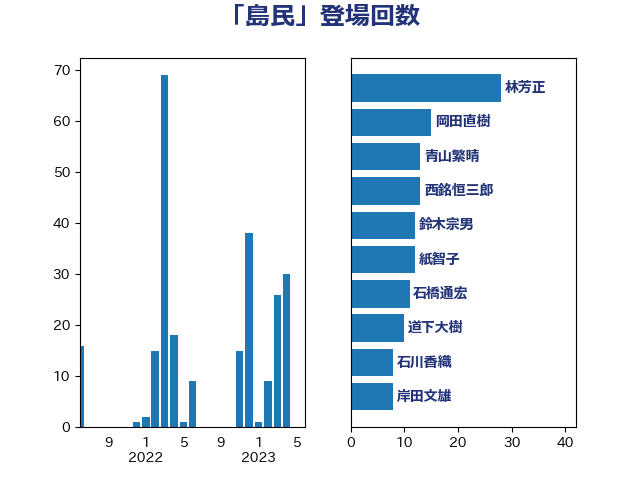

単語「島民」

| 林芳正 | 自由民主党 | 28 回 |
| 岡田直樹 | 自由民主党 | 15 回 |
| 青山繁晴 | 自由民主党 | 13 回 |
| 西銘恒三郎 | 自由民主党 | 13 回 |
| 鈴木宗男 | 日本維新の会 | 12 回 |
| 紙智子 | 日本共産党 | 12 回 |
| 石橋通宏 | 立憲民主党 | 11 回 |
| 道下大樹 | 立憲民主党 | 10 回 |
| 石川香織 | 立憲民主党 | 8 回 |
| 岸田文雄 | 自由民主党 | 8 回 |
| 太栄志 | 立憲民主党 | 7 回 |
| 務台俊介 | 自由民主党 | 7 回 |
| 鈴木貴子 | 自由民主党 | 6 回 |
| 斉藤鉄夫 | 公明党 | 6 回 |
| 美延映夫 | 日本維新の会 | 5 回 |
| 山田勝彦 | 立憲民主党 | 5 回 |
| 山岸一生 | 立憲民主党 | 5 回 |
| 和田政宗 | 自由民主党 | 5 回 |
| 勝部賢志 | 立憲民主党 | 5 回 |
| 佐藤英道 | 公明党 | 5 回 |
| 青山大人 | 立憲民主党 | 4 回 |
| 清水貴之 | 日本維新の会 | 4 回 |
| 杉本和巳 | 日本維新の会 | 3 回 |
| 後藤祐一 | 立憲民主党 | 3 回 |
| 伊東良孝 | 自由民主党 | 3 回 |
| 三上えり | 立憲民主党 | 3 回 |
| 高野光二郎 | 自由民主党 | 2 回 |
| 稲津久 | 公明党 | 2 回 |
| 田村貴昭 | 日本共産党 | 2 回 |
| 田村智子 | 日本共産党 | 2 回 |
| 片山さつき | 自由民主党 | 2 回 |
| 泉健太 | 立憲民主党 | 2 回 |
| 森屋隆 | 立憲民主党 | 2 回 |
| 新垣邦男 | 立憲民主党 | 2 回 |
| 伊波洋一 | 無所属 | 2 回 |
| 高橋はるみ | 自由民主党 | 1 回 |
| 高村正大 | 自由民主党 | 1 回 |
| 足立敏之 | 自由民主党 | 1 回 |
| 神谷裕 | 立憲民主党 | 1 回 |
| 白石洋一 | 立憲民主党 | 1 回 |
| 浜地雅一 | 公明党 | 1 回 |
| 浜口誠 | 国民民主党 | 1 回 |
| 山崎誠 | 立憲民主党 | 1 回 |
| 國場幸之助 | 自由民主党 | 1 回 |
| 吉田豊史 | 無所属 | 1 回 |
| 佐藤公治 | 立憲民主党 | 1 回 |
| 井野俊郎 | 自由民主党 | 1 回 |
| 中谷真一 | 自由民主党 | 1 回 |
| こやり隆史 | 自由民主党 | 1 回 |